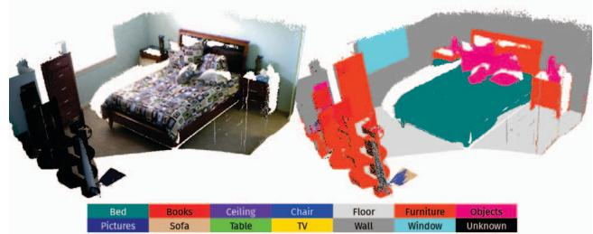
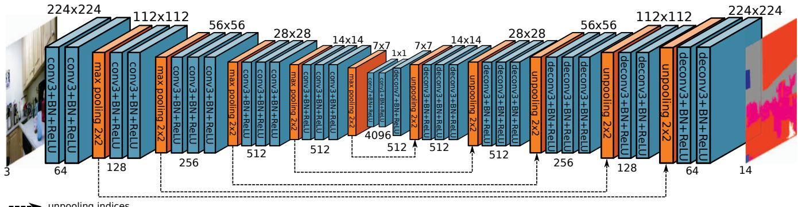

本节目标
读完你应能：① 说清激光侧处理动态（0005 SW-NDT 思路）和视觉侧（0153 起）的根本差异；② 用 SemanticFusion 2017 解释「语义通道怎么被动态检测借用」；③ 指出 SemanticFusion 的 CRF 是标签平滑而非回环检测（纠正一处常见误读）。
和前面课程怎么接
激光侧回链第一季 0005（SW-NDT）——全项目第一次碰「动态」，那是激光侧做法，本块 0153 起才是视觉侧系统做法，二者是同一问题的两条传感路线。0153 的 DynaSLAM 用的正是 SemanticFusion 这条「语义分割当可动先验」的思路；0147 的 SAM / DINOv2 是更现代的「语义零件」。0159 下一节会把 SemanticFusion 当做「语义建图本身」完整展开，本课只取它的「语义通道」.
1. 往激光侧看：同一问题，另一种传感器
0153–0156 八篇几乎都长在相机上——靠像素、靠分割、靠对极和深度。但「环境会动」这个问题，激光雷达那边早就遇过了。第一季 0005（SW-NDT）就是全项目第一次碰动态：它用 NDT（正态分布变换）做扫描配准，靠「扫描到地图的残差」判断哪些点不参与静态结构，从而把动态物体从配准里排除。关键区别是——激光侧根本不认识「人 / 车」，它只认「这个点这一帧和上一帧对不上」。
怎么看这张图：① 激光侧的红点并不「知道」那是人，它只看到残差大；② 视觉侧的红框是「语义先验」，先入为主认为人可能动；③ 两条路都靠几何残差收尾，但视觉侧多了「类别知识」这一步，也因此多了算力与误删风险。
要记住的一句话：激光侧用「配准残差」判动态，天生不依赖语义标签，是和视觉侧平行的另一种传感路线。
互动判断
激光侧（如 SW-NDT 思路）判断一个点是动态的，主要依据是什么？
2. 往语义侧看：SemanticFusion 2017 的语义通道
动态块八篇里，DynaSLAM、DS-SLAM、室外动态、WF-SLAM 都靠「分割网络给可动类先验」。这个思路的源头可以追溯到 SemanticFusion（2017，RSS）：它把逐像素 CNN 语义分割递归贝叶斯融合进 ElasticFusion 的 surfel 地图，开「稠密语义建图」先河。本课只取它最有用的那一半——「语义通道」是怎么产出「可动类先验」的；完整的语义建图（surfel 上挂概率、CRF 平滑、实例级）留给 0159。
SemanticFusion 的流水线很直观：相机图像一边送进 SLAM（ElasticFusion）建几何地图，一边送进 CNN 出每像素类概率；两类信息在 surfel 上汇合。
怎么看这张图：① 本课关心的不是右边最终语义地图，而是中间那条「CNN 类概率」通道；② 这类概率图一旦标出「人 / 车」，下游动态 SLAM 就能直接拿它当「潜在动态候选」；③ 所以 SemanticFusion 虽然是「语义建图」论文，它的语义通道却被 0153 起的动态方法当成了现成零件。
要记住的一句话：动态检测要的「可动类先验」，本质上就是 SemanticFusion 这条语义通道的输出。

怎么看这张图：左图是纯几何的 surfel 重建（一张密集点面地图），右图在同一个地图上叠加了逐像素语义标签（墙、地、家具、人等按图例着色）。本课要你盯的是「人」被标成了单独一类——这正是动态检测眼里最该警惕的「可动类」。注意 surfel 地图只存几何＋逐点语义概率，不区分「这是第几个杯子」（那是实例级，属 0159 / 0160 之后）。
3. 先验从哪来：一张反卷积 CNN
语义通道的「类概率」不是凭空来的，而是一个反卷积网络（Noh 等，VGG16 主干）在 RGB（或 RGB-D 多一通道）上逐帧预测的。理解它的结构，你就明白为什么下游动态方法愿意「白跑一次网络」去换可动先验。

怎么看这张图：这是一个编码–反卷积结构：下采样提取特征，再上采样恢复成逐像素的类别热力图。注意原文特别说明「RGBD 实验输入其实是 4 通道」——多出来的那一通道就是深度。本课把它和动态检测连起来看：深度通道让这个语义先验同时带几何信息，下游（如 DynaSLAM 的多视角深度一致性）就能更稳地确认「这个被标成人的是不是真在动」。
一个诚实的提醒：这类逐像素语义网络有个老毛病——它只能给「类」，给不出「这是第几个人 / 第几辆车」（实例级要靠 Co-Fusion / MaskFusion，见 0160）。所以下游动态方法拿它当「可动类先验」时，只能整类剔除，没法逐物体追踪——这也正是 DynaSLAM II（0155）要换实例分割、并进一步「留＋追踪」的动机。
3.1 一处必须纠正的误读：CRF 不是回环检测
SemanticFusion 用了一个全连接 CRF（Krähenbühl & Koltun 模型）给标签做空间平滑——让相邻的像素更可能标成同一类，修掉分割的锯齿。但一篇 2023 年的综述（本季语义块精读材料已核实）把它的 CRF 说成「enabling loop detection（促成回环检测）」，这是错的：CRF 在 SemanticFusion 里只做标签平滑，和回环毫无关系。引用时请勿采信这个误读。
怎么看这张图：① CRF 操作的对象是「标签的邻域一致性」，和「两帧是不是同一个地方」的回环完全是两件事；② 这个误读出自一篇 2023 综述的 §V-A，本季语义块精读时已核实；③ 诚实标注不确定性是硬规范，遇到这类冲突必须显式纠正而非照搬。
要记住的一句话：SemanticFusion 的 CRF 只做标签平滑，不是回环检测——引用前先核对原文。
4. 两条延伸路线怎么喂给动态检测
把这一节收个口：动态环境的「判动」可以从两个外侧借力，而它们喂给动态检测的东西恰好互补。
激光侧 → 给「几何残差」
激光用扫描配准残差直接判「这个点对不上」，不依赖任何标签，也不耗分割网络。它对应动态块里纯几何派（DSLAM、CRF、Dynam）的同源思想——靠运动残差，不靠类别。
语义侧 → 给「可动类先验」
SemanticFusion 这类语义通道产出「人 / 车」类概率，下游动态方法直接拿它当潜在动态候选。它对应动态块里语义派（DynaSLAM、DS-SLAM、室外、WF）的先验来源，省去了「从零训分割」的力气。
这也是为什么 0152 导览说「动态 ↔ 语义」是四块间最强的交叉：动态检测最省力的「动」信号，恰恰来自语义分割。0159 会把 SemanticFusion 当「语义建图本身」完整展开（surfel 上挂概率分布、CRF 平滑、与实例级的关系），而本课只是先把它最有用的「语义通道」借给动态块用上。
互动判断
下面这话对不对：「SemanticFusion 的语义通道输出，已经能区分『这是第几个人』，所以动态 SLAM 可以直接逐人追踪。」
5. 横向链接与下一步
- ↔ 0153 / 0156：DynaSLAM、DS-SLAM、WF-SLAM 的「可动类先验」正是本课讲的语义通道产物，现在你知道它最早来自 SemanticFusion 这条脉络。
- ↔ 0005：激光侧 SW-NDT 是同一「环境会动」问题在另一种传感器上的解答，和视觉侧平行。
- ↔ 0147：SAM / DINOv2 是现代版「语义零件」，比 2017 的逐像素 CNN 更强，动态 / 语义块都在用它们当现成工具。
- → 0159：下一节正式进入语义建图块，把 SemanticFusion 当「语义建图本身」完整讲——surfel 概率地图、CRF、与实例级（0160）的衔接。
读完你应该能回答
- 激光侧（0005 SW-NDT 思路）和视觉侧（0153 起）判断「动」的根本差异是什么？各自最大的盲区？
- SemanticFusion 2017 的「语义通道」是怎么被下游动态检测当「可动类先验」借用的？
- SemanticFusion 的逐像素语义有什么先天不足，导致动态 SLAM 不能直接拿它做「逐物体追踪」？
- 为什么综述里「CRF 促成回环检测」是错的？正确的 CRF 用途是什么？
- 激光侧和语义侧，分别喂给动态检测的是什么东西（几何残差 vs 可动类先验）？